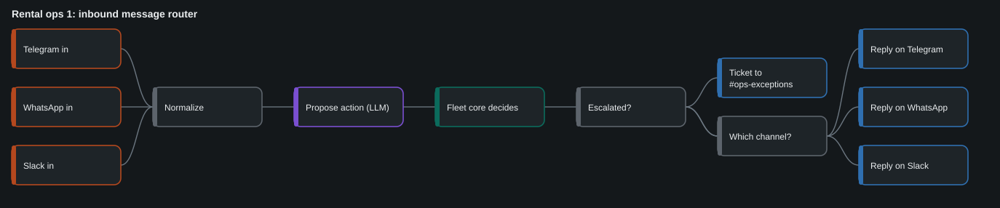
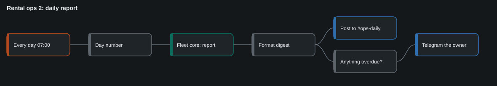
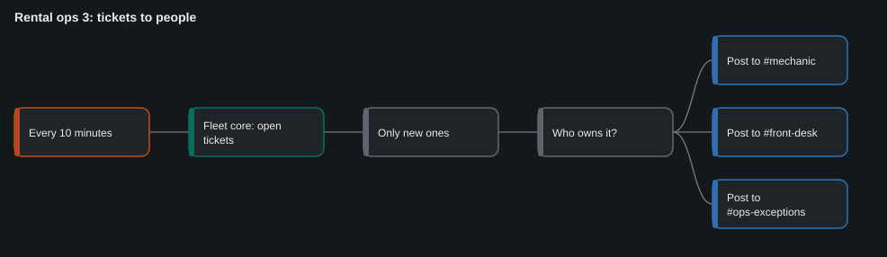
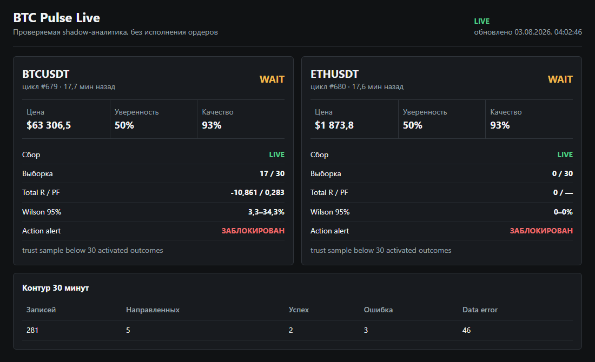

I turn manual business processes into agents and workflows, and I build the checks that decide when an agent may act without a person. Every project below ships with the tests that prove it.
An intake agent for inbound calls: it qualifies the caller, books a visit and hands the request to a manager or a CRM. The hard part is not the voice. It is what the agent does to the schedule when speech recognition fires twice, a webhook is retried or a write times out.
So the model never writes. It proposes an action, and a 320-line core decides whether that action is allowed, makes the write idempotent and lets the agent announce only a result it has verified.
Voice samples from the Russian-language pilot (synthesised agent voice, 8 kHz telephony profile):
A scripted call run through the real core, with three faults injected (simulated caller, no audio):
caller 10 is fine. Actually no, not Tuesday. Thursday. core book(tue-10:00) -> ask_confirmation # stale consent: the old "yes" no longer counts caller Thursday at 10. core book(thu-10:00) -> booked # the write timed out after it happened; # looked up by idempotency key, not retried core book(thu-10:00) again -> booked; visits: 1 # STT fired on partial and final transcript agent You are booked for ... [caller barges in] core result still to announce -> booked 1 visit; invariants held after each of 16 steps
Status: prototype. Call flow, qualification and hand-off are designed and tested at the state layer; the agent has not taken live customer calls.
A bike rental shop gets the same messages all day: is anything free, I paid the deposit, I am here to pick up, can I extend. Agents can answer them. What they must not do is hand the same bike to two people.
So the LLM proposes one action per message, and a 180-line fleet core decides: availability, deposits, hand-overs, returns, maintenance. Each message is applied once. What the core cannot settle becomes a ticket routed to the mechanic or the front desk.
| Simulated 14-day season, 60 bikes | |
|---|---|
| Messages | 706 |
| Handled without a person | 657 (93.1%) |
| Sent to a person | 49: unclear 24, hand-over blocked 7, previous customer not back 6, damage 5, extension conflict 4, no license 3 |
| Invariant violations | 0 |
github.com/galpetame/rental-ops-agents
A reference implementation on a synthetic fleet with generated customers, not a client deployment. The workflows are importable n8n JSON and are tested for wiring; they have not yet run against live messenger accounts.



I run projects with several coding agents on one shared state file. The failures that cost me time were rarely wrong answers. They were reports that had run ahead of the workspace: a build that "succeeded" two pages too long, a checklist that kept reverting to an old number, a file named "signed" with no signature in it.
The gate lets a report state as fact only what a re-runnable check confirms. The agent records each claim in a hash-chained ledger with a check against a file. The gate re-runs every check and reads the report sentence by sentence.
$ python examples/pack/build.py --overflow CONTRADICTED C-1 the pack has 83 pages (counted 85, expected 83) CONTRADICTED C-2 every page is stamped N/83 VERIFIED C-3 the total appears in all six places VERIFIED C-4 79 signature places VERIFIED C-5 no draft marks left VERIFIED C-6 the print checklist matches its source UNCHECKED C-7 printing four sets costs about 700 (declared estimated; not checked) REPORT line 3: says 'verified' as fact, but C-1 is contradicted GATE FAILED
While I wrote the tests, they found two holes in the linter itself. One let a hedge in the first half of a sentence excuse a claim in the second: "Not verified by hand, but the upload is done."
BTC Pulse reads public exchange data on a fixed cycle, scores a directional hypothesis for BTC and ETH, and routes posts to 11 Slack channels. It has no keys and places no orders. Its job is to say "wait" most of the time and to prove it when it says anything else.
Every post passes a chain of gates. An action alert stays blocked until the direction has at least 30 activated outcomes and a Wilson interval that supports it. In the screenshot the machine has 17 of 30 and a losing record, so it has blocked itself.

| Gate | Blocks a post when |
|---|---|
| INV-13 | the symbol or horizon does not match the channel |
| INV-15 | the post type is not on the channel's allow list |
| INV-22 | an active signal lacks entry, stop, take-profit, confidence or scorer version |
| INV-17 | the quoted price is more than 0.5% from an independent spot fetch |
| Predictive gate | the direction has no confirmed track record yet |
Read-only by design. This is research and alerting, not investment advice or automated trading.
My own product company: collectible toys in a dark, cute aesthetic for adults in the alt, goth and kawaii scenes. Agents run the market research, positioning and competitive analysis on top of a parametric financial model, and generate concept renders that I select and direct.
Status: pre-production. Payments are in sandbox mode and the toys are renders, not manufactured stock.
| Rule | What it looks like in the work above |
|---|---|
| Process first, prompts second | The voice agent started as a call flow and 18 acceptance checks, not as a prompt. |
| The model proposes, code decides | No model writes to a schedule, a Slack channel or a ledger without passing a gate. |
| Facts are checked, estimates are labelled | Every figure on this page comes from a file, a test run or a screenshot. Prototypes are marked as prototypes. |
| A person owns the exceptions | Unknown outcomes go to a human with a packet that explains what happened and what is half done. |
Before AI: four years as an economist and project coordinator on municipal tender contracts in Moscow, then a year of installation work at height in Israel. English fluent, Russian native, Hebrew basic. Based in Tel Aviv; open to full-time roles in Israel and to remote B2B contracts.